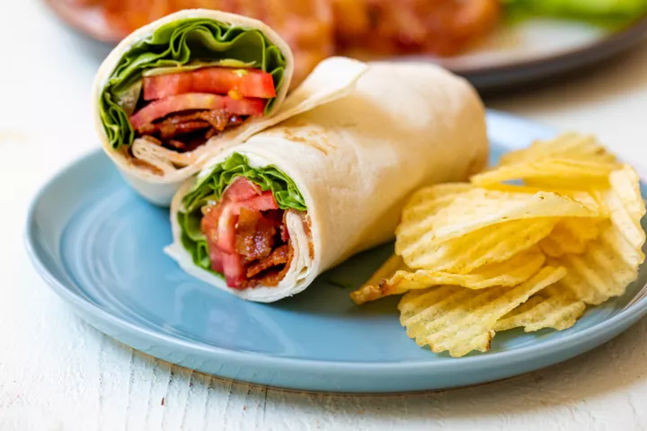

Blt Wraps

-
Preparation Info
-
Prep: 10 mins
-
Cook: 20 mins
-
Total: 30 mins
-
Servings: 6 servings
Ingredients
-
1 pound bacon
-
1 head butter lettuce, leaves roughly chopped
-
3 small ripe tomatoes, sliced
-
6 large burrito-size tortilla wraps
-
½ cup mayo
-
2 tablespoons thinly sliced fresh chives
-
1 tablespoon lemon juice
-
½ teaspoon garlic powder
-
⅛ teaspoon kosher salt
Steps
-
Preheat oven to 375 degrees F.
-
Cook the bacon.
-
Make the chive mayo.
-
Assemble the wraps.
-
Pack the wraps.
Return to top
Return to mainpage